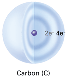

|
|
|
|
Objectives
Key Terms Life without carbon would be as unlikely as life without water. Other than water, most molecules of a cell are carbon-based. These "biomolecules" are composed of a backbone of carbon atoms bonded to one another. Atoms of other elements may branch off this carbon backbone. This basic structure is the foundation of the wide range of life's molecules. Carbon Skeletons and Functional Groups  Carbon can form bonds with one or more other carbon atoms, producing an endless variety of carbon skeletons (Figure 5-1). Most carbon-based molecules are classified as organic molecules. In contrast, non-carbon-based molecules such as water (H2O), oxygen (O2), and ammonia (NH3) are classified as inorganic molecules.
Besides bonding with other carbon atoms, carbon may also bond with atoms of other elements. For example, organic molecules that are composed of only carbon and hydrogen are known as hydrocarbons. Many hydrocarbons are important fuels. Methane (CH4) is one of the most abundant hydrocarbons in natural gas, a fuel used to heat homes. In your body, energy-storing fat molecules contain long hydrocarbon chains. In addition to hydrogen, two other atoms frequently found in organic molecules are oxygen and nitrogen. A group of atoms within a molecule that interacts in predictable ways with other molecules is called a functional group. Figure 5-2 shows some of the functional groups important in the chemistry of life. Together, the carbon skeleton and the attached functional groups determine the properties of an organic molecule. For example, hydroxyl groups are hydrophilic, meaning they attract water molecules. Thus, most organic molecules that contain hydroxyl groups are hydrophilic, which literally means "water-loving." These molecules tend to become surrounded by water molecules in an aqueous environment.
Monomers and Polymers The diversity of life's polymers is vast. Every living cell has thousands of different kinds of polymers. The specific molecules vary from cell to cell within an organism. The variety of polymers differs among individuals of the same species, and even more among organisms of different species. And yet, all of these polymers are built from a collection of fewer than 50 kinds of monomers. Life's large molecules are classified into four main categories: carbohydrates, lipids, proteins, and nucleic acids. In the next sections of this chapter, you'll explore the properties of carbohydrates, lipids, and proteins. The structure and role of nucleic acids, such as DNA, will be explored in depth in Chapter 11. But first, find out how polymers are constructed and broken down. Building and Breaking Polymers
Organisms not only build polymers; they also have to break them down. For example, many of the molecules in your food are polymers. You must break down these giant molecules to make their monomers available to your cells. Your cells can either further break down the monomers to obtain energy, or, alternatively, use them to build new polymers. Cells break bonds between monomers by adding water to them, the reverse of dehydration (Figure 5-5). This process is called a hydrolysis reaction because water (hydro-) is used to break down (-lysis) the polymer. To summarize, water is removed to build a polymer, and water is added to break it down.
Concept Check 5.1
|